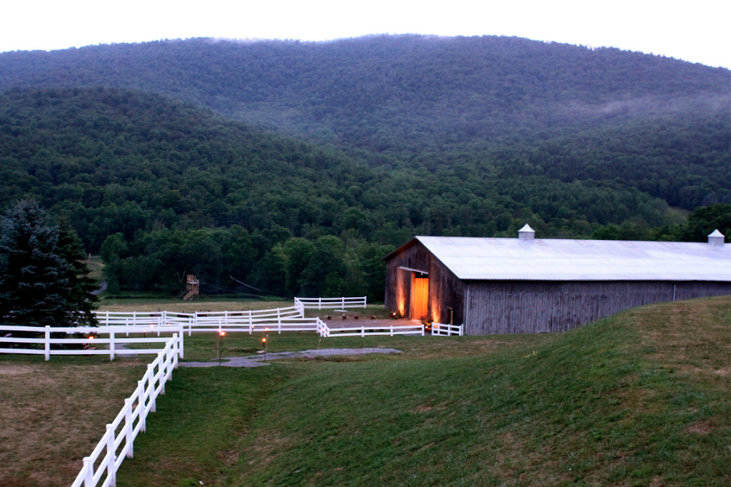
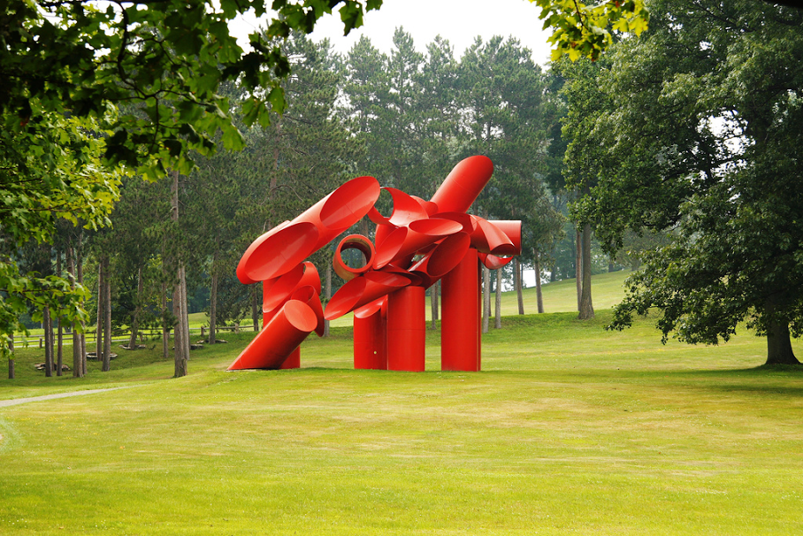

EatThe farm-to-table movement lifts Hudson Valley dining to a new level. Rustic, casual or elegant, you'll find delicious restaurant options. The area is home to a slew of talented chefs, many of whom attended the Culinary Institute of America in Hyde Park and decided to stay close by after graduation. Excellent cuisine is available throughout the region, and at the Culinary Institute itself. |
|
|  | StayThe majority of places to stay in these regaions are inns, bed-and-breakfasts, and small boutique hotels, and they range from quaint to fairly luxurious. |
|  | DoLonely Planet describes the Hudson River Valley as "a real city break, with leafy drives, wineries and plenty of farm-to-table foodie options." National Geographic Traveler named the Hudson Valley one of the top 20 must-see destinations in the world. |